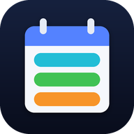

iPhone · Apple Watch

Shifts
Shifts · משמרות · Смены
The shift roster in your pocket: an iPhone and Apple Watch app for a volunteer team that keeps its shift schedule in a Google Sheet.
What it does
- Shows your upcoming shifts and who is on each one with you, read from your team's Google Sheet.
- Shows the shifts that still need people.
- Keeps your Google Calendar up to date: after you confirm, it adds, moves and removes your shift events, with the guests you choose.
- Tells you when your shifts change in the sheet.
- Widgets, a Live Activity during the shift, an Apple Watch app and watch face complications.
- In English, Hebrew and Russian.
How it uses your Google data
You sign in with your Google account, and the app asks for:
- Your email address — to show which account is signed in.
- Google Sheets, read-only — to read the roster from the one sheet whose link you give it. The app never changes the sheet.
- Google Calendar events — to find its shift events in your calendar, and to add, move, rename and remove them after you confirm.
Everything stays on your iPhone and Apple Watch. The app has no servers, no analytics and no ads, and the developer never receives your data. The details are in the Privacy Policy.
iPhone · Apple Watch
משמרות
Shifts · משמרות · Смены
סידור המשמרות בכיס: אפליקציה לאייפון ול־Apple Watch בשביל צוות מתנדבים שמנהל את סידור המשמרות בגיליון Google.
מה היא עושה
- מציגה את המשמרות הקרובות שלכם ומי איתכם בכל משמרת, מתוך גיליון Google של הצוות.
- מציגה את המשמרות שעדיין חסרים בהן אנשים.
- שומרת על יומן Google שלכם מעודכן: אחרי שאישרתם, היא מוסיפה, מזיזה ומוחקת את אירועי המשמרת שלכם, עם האורחים שבחרתם.
- מודיעה לכם כשהמשמרות שלכם משתנות בגיליון.
- ווידג׳טים, Live Activity בזמן המשמרת, אפליקציה ל־Apple Watch ותצוגות על פני השעון.
- בעברית, באנגלית וברוסית.
איך היא משתמשת בנתוני Google שלכם
מתחברים עם חשבון Google, והאפליקציה מבקשת:
- את כתובת האימייל שלכם — כדי להציג באיזה חשבון התחברתם.
- Google Sheets, קריאה בלבד — כדי לקרוא את הסידור מהגיליון היחיד שאת הקישור אליו נתתם לה. האפליקציה אף פעם לא משנה את הגיליון.
- אירועים ביומן Google — כדי למצוא את אירועי המשמרת שלה ביומן שלכם, ולהוסיף, להזיז, לשנות שם ולמחוק אותם אחרי שאישרתם.
הכול נשאר באייפון וב־Apple Watch שלכם. לאפליקציה אין שרתים, אין ניתוח נתוני שימוש ואין פרסומות, והמפתח אף פעם לא מקבל את הנתונים שלכם. הפרטים במדיניות הפרטיות.
iPhone · Apple Watch
Смены
Shifts · משמרות · Смены
Расписание смен в кармане: приложение для iPhone и Apple Watch для команды добровольцев, которая ведёт расписание смен в Google Таблице.
Что оно умеет
- Показывает ваши ближайшие смены и кто с вами в каждой из них — по Google Таблице команды.
- Показывает смены, где ещё нужны люди.
- Поддерживает ваш Google Календарь в актуальном виде: после вашего подтверждения добавляет, переносит и удаляет события ваших смен — с теми гостями, которых вы выбрали.
- Сообщает, когда ваши смены меняются в таблице.
- Виджеты, Live Activity во время смены, приложение для Apple Watch и усложнения циферблата.
- На русском, иврите и английском.
Как приложение использует ваши данные Google
Вы входите через свой аккаунт Google, и приложение просит:
- Адрес вашей почты — чтобы показать, в какой аккаунт выполнен вход.
- Google Таблицы, только чтение — чтобы читать расписание из той единственной таблицы, ссылку на которую вы ему дали. Приложение никогда не меняет таблицу.
- События Google Календаря — чтобы находить свои события смен в вашем календаре и после вашего подтверждения добавлять, переносить, переименовывать и удалять их.
Всё остаётся на вашем iPhone и Apple Watch. У приложения нет серверов, аналитики и рекламы, и разработчик никогда не получает ваши данные. Подробности — в Политике конфиденциальности.